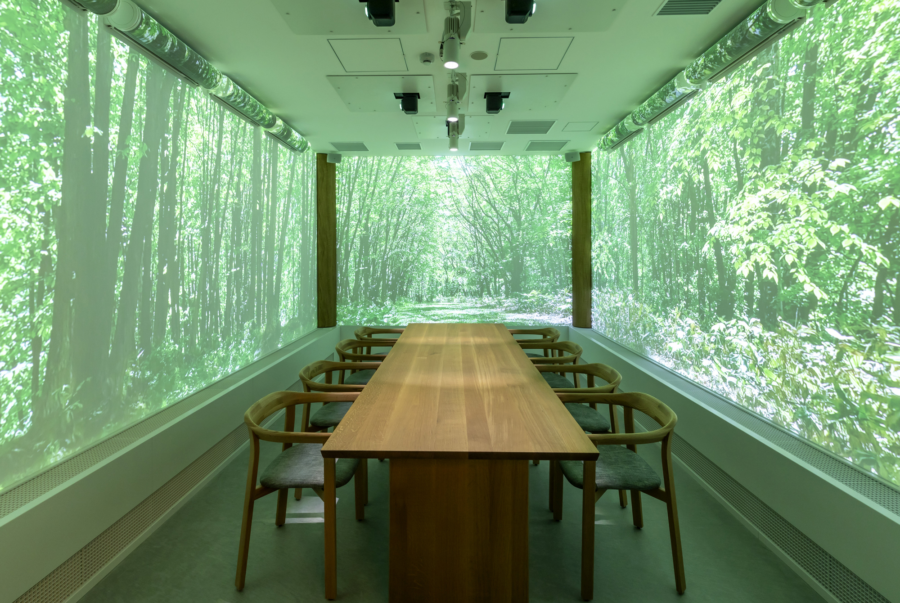

映像・音声・気流のクロスモーダル刺激により、空気清浄感を高め、食事体験を豊かにする空間演出。 Space production that enhances the sense of air cleanliness and enriches the dining experience through cross-modal stimuli of video, sound, and airflow.

2025年大阪・関西万博のサントリー・ダイキンによる高原レストラン「水空」における体験設計プロジェクトです。映像、音響、そしてダイキンの空調技術による気流を組み合わせたクロスモーダルな体験を提供し、食事中の「空気清浄感」や「おいしさ」を感覚的に増幅させることを目指しました。
This is an experience design project for the Suntory and Daikin "Suikuu" Alpine Restaurant at Expo 2025 Osaka, Kansai. By combining video, sound, and airflow from Daikin's air conditioning technology, we aimed to intuitively amplify the perception of "air cleanliness" and "deliciousness" during dining through a cross-modal experience.
本プロジェクトにおいて、クロスモーダルコンテンツの技術設計およびその効果の実証実験を担当しました。VR技術と環境刺激を統合し、特定の環境的文脈を再現することで、食体験における新たな付加価値の創出に取り組んでいます。
In this project, I was in charge of the technical design of the cross-modal content and the verification experiments to prove its effectiveness. By integrating VR technology and environmental stimuli to reproduce specific environmental contexts, I worked on creating new added value in the dining experience.